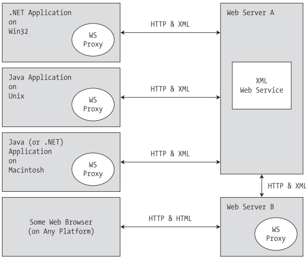
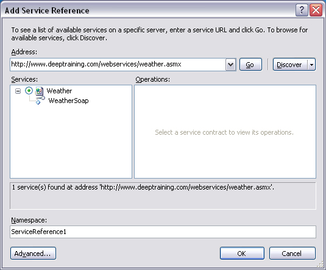

Chapter 25 - Understanding XML Web services
Content
XML web services offer amore flexible alternative to distributed application development. Simply put, an XML web service is a unit of code hosted by a web server that can be accessed using industry standards such as HTTP and XML.
As you would guess, using neutral technologies, XML web services offer an unprecedented level of operating system, platform, and language interoperability.
In this final chapter, you will learn how to build XML web services using the .NET platform. Along the way, you will examine a number of related topics, such as discovery services (UDDI and DISCO), the Web Service Description Language (WSDL),
and the Simple Object Access Protocol (SOAP). Once you understand how to build an XML web service, you will examine various approaches to generate client-side proxies that are capable of invoking "web methods" in a synchronous and asynchronous fashion.
The role of XML Web services
From the highest level, you can define an XML web service as a unit of code that can be invoked via HTTP requests. Unlike a traditional web application, however, XML web services are not (necessarily) used to emit HTML back to a browser for display purposes.
Rather, an XML web service often exposes the same sort of functionality found in a standard .NET code library (e.g., crunch some numbers, fetch a DataSet, return stock quotes, etc.).
Benefits of XML Web services
At first glance, an XML web services may seem to be little more than just another remoting technology. While this is true, there is more to the story. Historically speaking, accessing remote objects required platform-specific
(and often language-specific) protocols (DCOM, Java RMI, etc.). The problem with this approach is not the underlying technology, but the fact that each is locked into a specific (often proprietary) wire format.
Thus, if you are attempting to build a distributed system that involves numerous operating systems, each machine must agree upon the packet format, transmission protocol, and so forth.
To simplify matters, XML web services allow you to invoke methods and properties of a remote object using standard HTTP requests. To be sure, of all the protocols in existence today, HTTP is the one specific wire protocol that
all platforms can agree on (after all, HTTP is the back-bone of the World Wide Web).
Another fundamental problem with proprietary remoting architectures is that they require the sender and receiver to understand the same underlying type system. However, a Java arrayList has little to do with a .NET ArrayList,
which has nothing to do with a C++ array. XML web services provide a way for unrelated platforms, operating systems, and programming languages to exchange information in harmony.
Rather than forcing the caller to understand a specific type system, information is passed between systems via XML data representation (which is little more than a well-formatted string). The short answer is,
if your operating system can go online and parse character data, it can interact with an XML web service.
Defining an XML Web service Client
One aspect of XML web services that might not be readily understood from the onset is the fact that an XML web service consumer is not limited to a web page. Console-based and Windows Forms–based clients can use a web service just as easily.
In each case, the XML web service consumer indirectly interacts with the distant XML web service through an intervening proxy type.
An XML web service proxy looks and feels like the actual remote object and exposes the same set of members. Under the hood, however, the proxy's implementation code forwards requests to the XML web service using standard HTTP.
The proxy also maps the incoming stream of XML back into .NET-specific data types (or whatever type system is required by the consumer application).
The below figure illustrates the fundamental nature of XML web services.

The building blocks of an XML Web service
In addition to the managed code library that constitutes the exposed functionality, an XML web service requires some supporting infrastructure. Specifically, an XML web service involves the following core technologies:
- A discovery service (so clients can resolve the location of the XML web service)
- A description service (so clients know what the XML web service can do)
- A transport protocol (to pass the information between the client and the XML web service)
Before a client can invoke the functionality of a web service, it must first know of its existence and location. To share the functionality of your web service with the world, you have the option of registering your XML web service with a Universal Description, Discovery, and Integration (UDDI) server.
Clients may submit request to a UDDI catalog to find a list of all web services that match some search criteria. Once you have identified a specific web server from the list returned via the UDDI query,
you are then able to investigate its overall functionality. If you like, consider UDDI to be the white pages for XML web services.
In addition to UDDI discovery, an XML web service built using .NET can be located using DISCO, which is a somewhat forced acronym standing for Discovery of Web Services.
Using static discovery (via a *.disco file) or dynamic discovery (via a *.vsdisco file), you are able to advertise the set of XML web services that are located at a specific URL.
Potential web service clients can navigate to a web server's *.disco file to see links to all the published XML web services.
Once a client knows the location of a given XML web service, the client in question must fully understand the exposed functionality. For example, the client must know that there is a method named GetWeatherReport() that takes some set of parameters and sends back a given return value
before the client can invoke the method.
As you may be thinking, this is a job for a platform-, language-, and operating system–neutral metalanguage. Specifically speaking, the XML-based metadata used to describe a XML web service is termed the Web Service Description Language (WSDL).
In a good number of cases, the WSDL description of an XML web service will be automatically generated by Microsoft IIS when the incoming request has a ?wsdl suffix.
For more complex cases (typically for the purposes of interoperability), many developers take a "WSDL first" approach and begin building their web services by defining the WSDL document manually.
Once the client has created a proxy type to communicate with the XML web service, it is able to invoke the exposed web methods. As mentioned, HTTP is the wire protocol that transmits this data.
Specifically, however, you can use HTTP GET, HTTP POST, or SOAP to move information between consumers and web services.
By and large, SOAP will be your first choice, for as you will see, SOAP messages can contain XML descriptions of complex types (including your custom types as well as types within the .NET base class libraries).
On the other hand, if you make use of the HTTP GET or HTTP POST protocols, you are restricted to amore limited set of core data XML schema types.
Building an Web service
To create an Web service, you should use ASP.NET Web Service template of Visual Studio. When using this template, Visual Studio will generate a Service.asmx file that defines the following <%@WebService%> directive:
<%@ WebService Language="C#" CodeBehind="~/App_Code/Service.cs" Class="Service" %>
Note that the CodeBehind attribute is used to specify the name of the C# code file that defines the related class type. By default, Service.cs contains a method is HelloWorld().
To test your new XML web service, simply run (or debug) the project using Visual Studio.
Understanding the [WebService] attribute
An XML web service class may optionally be qualified using the [WebService] attribute. This attribute supports a few named properties, the first of which is Namespace. This property can be used to establish the name of the XML namespace to use within the WSDL document.
As you may already know, XML namespaces are used to scope custom XML elements within a specific group (just like .NET namespaces). By default, the ASP.NET runtime will assign a dummy XML namespace of http://tempuri.org for a given *.asmx file.
As well, Visual Studio 2005 assigns the Namespace value to http://tempuri.org by default.
Before you publish your XML web service to the world at large, you should supply a proper namespace that reflects the point of origin, which is typically the URL of the site hosting the XML web service.
The final property of the WebServiceAttribute type is Name, which is used to establish the name of the XML web service exposed to the outside world. By default, the external name of a web service is identical to the name of the class type itself (Service by default).
However, if you wish to decouple the .NET class name from the underlying WSDL name, you can update the [WebService] attribute.
Understanding the [WebServiceBinding] attribute
This attribute is used to specify if the XML web service conforms to "Web services interoperability (WSI) basic profile 1.1".
Clearly this is problematic for an XML web service, as one of the motivating factors is to simplify the way in which information can be processed in a multiplatform, multi-architecture, and multi-language universe.
To rectify the problem, the WSI initiative offers a nonproprietary web services specification to promote the interoperability of web services across platforms. Under .NET 2.0, the ConformsTo property of [WebServiceBinding] can be set to any value of the WsiProfiles enumeration:
public enum WsiProfiles
{
None,
BasicProfile1_1
}
By default, XML web services generated using Visual Studio 2005 are assumed to conform to the WSI basic profile 1.1. Of course, simply setting the ConformsTo named property to WsiProfiles.BasicProfile1_1 does not guarantee each web method is truly compliant.
For example, one rule of BP 1.1 states that every method in a WSDL document must have a unique name (overloading of exposed web methods is not permitted under BP 1.1). The good news is that the ASP.NET runtime is able to determine various BP 1.1 validations and
will report the issue at runtime.
Ignoring BP 1.1 ConformanceVerification
In some cases, however, you may wish to ignore BP 1.1 conformance (e.g., if you are building in-house XML web services where interoperability is not much of an issue). To instruct the runtime to ignore BP 1.1 violations, set the ConformsTo property to WsiProfiles.None and
the EmitConformanceClaims property to false.
Disabling BP 1.1 ConformanceVerification
If you wish to completely disable BP 1.1 verification for your XML web service, you may do so by defining the following <conformanceWarnings> element within a proper Web.config file:
<configuration>
<system.web>
<webServices>
<conformanceWarnings>
<remove name='BasicProfile1_1'/>
</conformanceWarnings>
</webServices>
</system.web>
</configuration>
Understanding the [WebMethod] attribute
The [WebMethod] attribute must be applied to each method you wish to expose from an XML web service. Like most attributes, the WebMethodAttribute type may take a number of optional named properties.
The Description property of the [WebMethod] attribute allows you to describe the functionality of a particular web method.
The MessageName property is used to set name of a particular web method.
Exploring the Web Service Description Language (WSDL)
WSDL is an XML-based grammar that describes how external clients can interact with the web methods at a given URL, using each of the supported wire protocols. In many ways,
a WSDL document can be viewed as a contract between the web service client and the web service itself. To this end, it is yet another metalanguage. Specifically,
WSDL is used to describe the following characteristics for each exposed web method:
- The name of the XML web methods
- The number of, type of, and ordering of parameters (if any)
- The type of return value (if any)
- The HTTP GET, HTTP POST, and SOAP calling conventions
In most cases, WSDL documents are generated automatically by the hosting web server. When you append the ?wsdl suffix to a URL that points to an *.asmx file,
the hosting web server will emit the WSDL document for the specified XML web service.
For in-house XML web services, the WSDL generated by your XML web server will be sufficient most of the time.
However, it is also possible to begin an XML web service project by authoring the WSDL document by hand. The biggest selling point for WSDL first has to do with interoperability concerns.
Recall that prior to the WSI specification, it was not uncommon for various web service tools to generate incompatible WSDL descriptions. If you take a WSDL first approach, you can craft the document as required.
Defining a WSDL document
A valid WSDL document is opened and closed using the root <definitions> element. The opening tag typically defines various xmlns attributes. These qualify the XML namespaces that define various subelements.
At aminimum, the <definitions> element will specify the namespace where the WSDL elements themselves are defined (http://schemas.xmlsoap.org/wsdl).
To be useful, the opening <definitions> tag will also specify numerous XML namespaces that define simple data WSDL types, XML schema types, SOAP elements, and the target namespace.
Within the scope of the root element, you will find five possible subelements. Thus, a bare-bones WSDL document would look something like the following:
<?xml version="1.0" encoding="utf-8"?>
<wsdl:definitions ...>
<wsdl:types>
<wsdl:/types>
<wsdl:message>
<wsdl:/message>
<wsdl:portType>
<wsdl:/portType>
<wsdl:binding>
<wsdl:/binding>
<wsdl:service>
<wsdl:/service>
<wsdl:/definitions>
Consuming an Web service
To consume an Web service, you should generate a proxy class for this service by using Visual Studio. You can use Add Web Reference dialog box or Add Service Reference dialog to generate a proxy file.

Reads example of exposing custom types from Web methods at page 949 to 952 of textbook.
Understanding the Discovery Service Protocol (UDDI)
Until XML web services becomes the de facto standard of distributed computing, most web services will be leveraged by companies tightly coupled with a given vendor.
Given this, the company and vendor at large already know about each other, and therefore have no need to query a UDDI server to see if the web service in question exists.
However, if the creator of an XML web service wishes to allow the world at large to access the exposed functionality to any number of external developers, the web service may be posted to a UDDI catalog.
UDDI is an initiative that allows web service developers to post a commercial web service to a well-known repository. Despite what you might be thinking, UDDI is not a Microsoft-specific technology.
In fact, IBM and Sun Microsystems have an equal interest in the success of the UDDI initiative. As you would expect, numerous vendors host UDDI catalogs.
Summary
This chapter exposed you to the core building blocks of .NET web services. The chapter began by examining the core namespaces (and core types in these namespaces) used during web service development.
As you learned, web services developed using the .NET platform require little more than applying the [WebMethod] attribute to each member you wish to expose from the XML web service type.
Optionally, your types may derive from System.Web.Services.WebService to obtain access to the Application and Session properties (among other things).
This chapter also examined three key related technologies: a lookup mechanism (UDDI), a description language (WSDL), and a wire protocol (GET, POST, or SOAP).